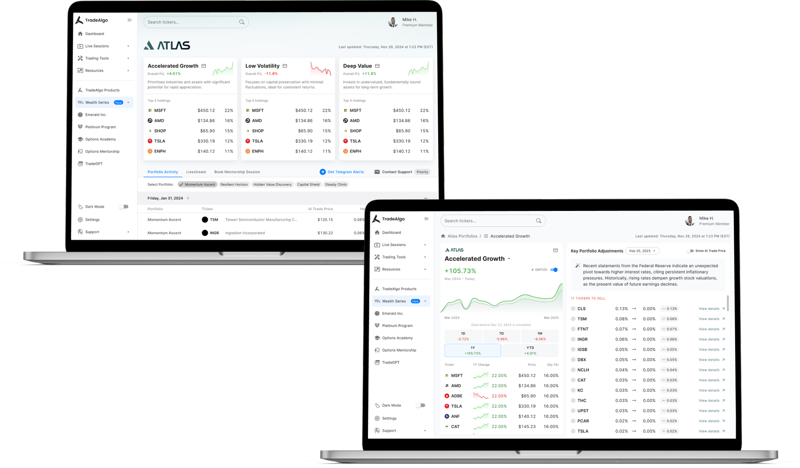
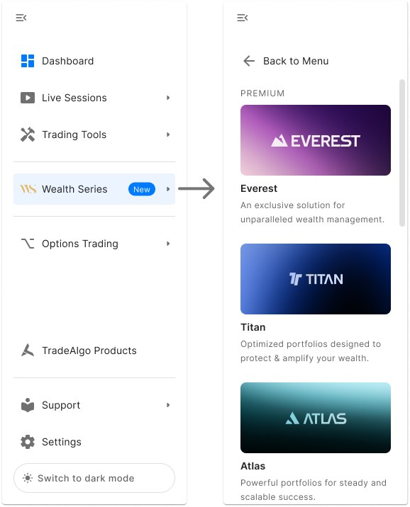
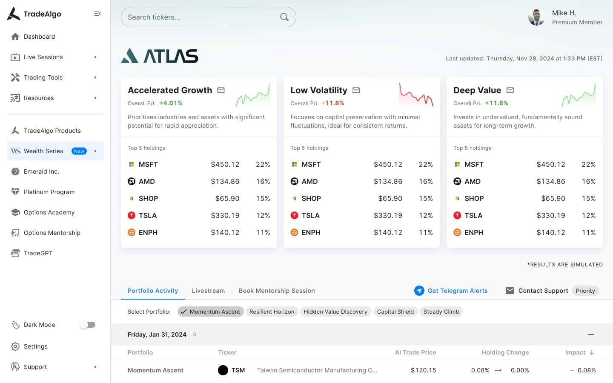
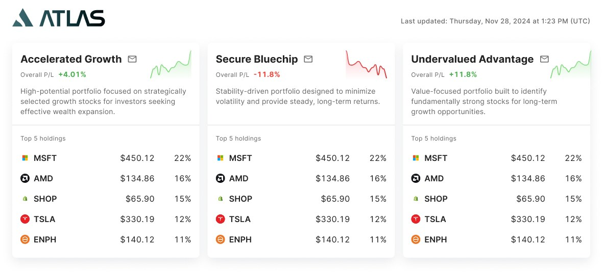
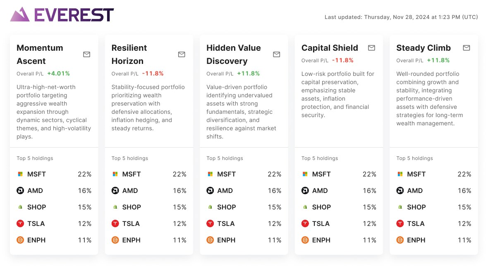
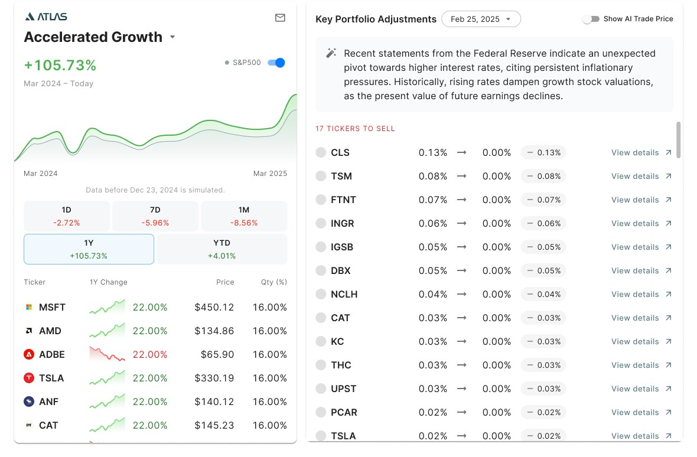
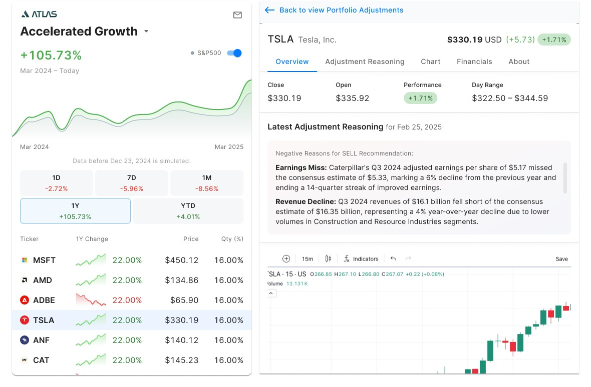
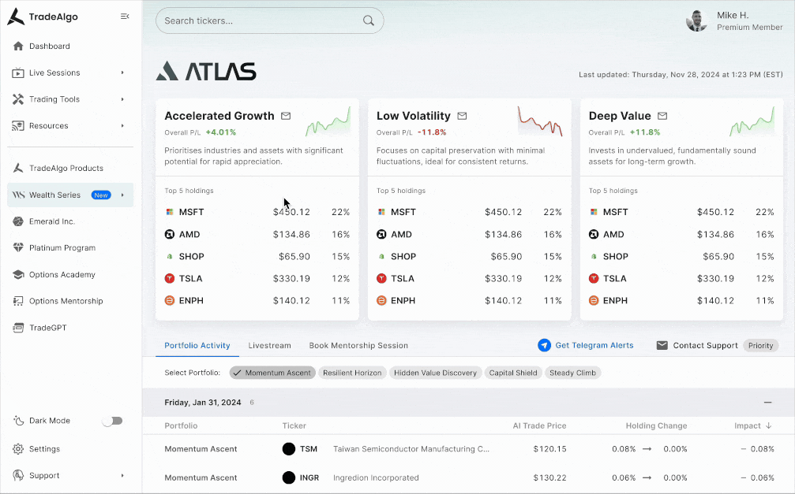
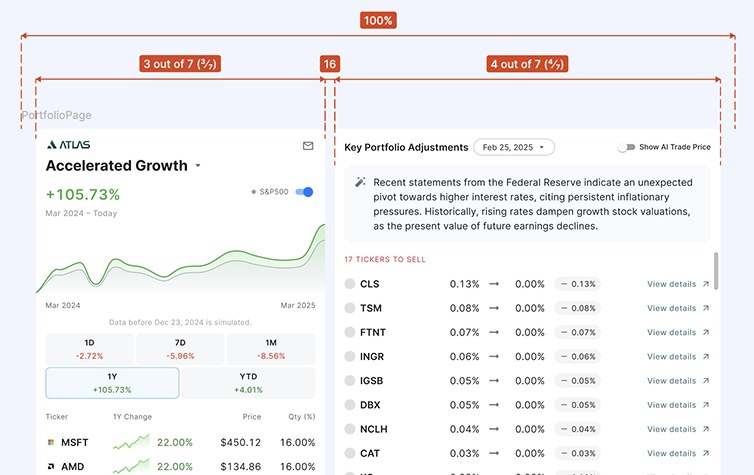
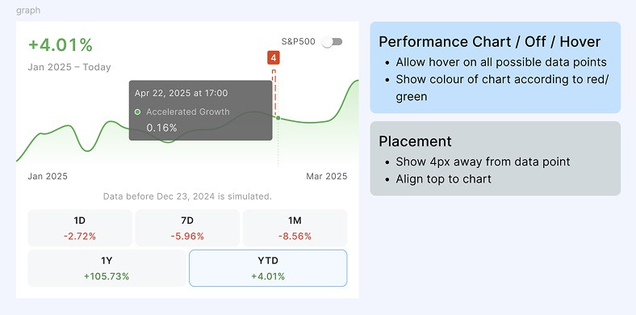

TradeAlgo portfolio strategies
Designing a data-rich, AI-powered portfolio strategy dashboard for retail investors.

Overview
Wealth Series is a premium portfolio management product within TradeAlgo that leverages AI to recommend trading strategies based on a user’s assets under management (AUM). The product is tiered into three levels: Atlas, Titan, and Everest, catering to different investor profiles.
This project focused primarily on high-fidelity UI design rather than deep UX exploration, as core functionality and flows were already defined by the product and quant teams. My role was to translate these requirements into clean, intuitive interfaces.
Key features
Easy tier navigation
Users can access Wealth Series directly from the main sidebar, where each investment tier is listed as a separate section. This clear, top-level navigation allows users to easily explore the tier most relevant to their AUM bracket, and quickly switch between tiers to compare different strategies and offerings. Each tier opens to its own dedicated dashboard with AI-curated strategies tailored to that investor segment.


Porfolio overview at a glance
Each tier dashboard starts with a set of AI-recommended strategies - three for Atlas and Titan, and five for Everest. Each strategy is presented as a card showing the total P/L, a brief description, and the top 5 holdings.

For Everest’s five-strategy layout, we adjusted the card design to fit the narrower layout by removing the sparkline for a cleaner, more readable display.

Detailed portfolio view
Clicking a strategy card opens a detailed view, with a fixed-left chart module and scrollable right-side content. This layout ensures that users can track performance with the interactive performance chart and full list of holdings, while exploring deeper data at their own pace.

The right panel features a Key Portfolio Adjustments module, a scrollable list of AI-suggested actions like buy/sell/hold. Clicking into any adjustment opens a focused panel providing the ticker overview, LLM-generated reasoning for the adjustment, and other financial information. This design empowers users to understand the why behind AI decisions before making changes.

Prototype
To bring the Wealth Series interface to life, we created a high-fidelity prototype showcasing key flows and interactions, from exploring AI-recommended strategies to viewing in-depth portfolio details.This prototype was used for internal reviews, stakeholder alignment, and early feedback.
Watch the walkthrough below:

Handoff to dev
To ensure a smooth transition from design to build, we prepared detailed handoff files in Figma, complete with notes on layout structure, spacing, and interactions. For components with interactive behaviour like tab switching or hover states, we included clear annotations and examples. These notes helped reduce ambiguity during development and made it easier for engineers to implement the designs as intended.


Ongoing development
The Wealth Series product is currently in development. Our team is working closely with QA to ensure that both the visual design and interactive behaviours are implemented accurately. This includes checking layout alignment, ensuring smooth interactions, and verifying that data is displayed correctly. By maintaining a tight feedback loop between design and development, we’re making sure the final product stays true to the original vision.